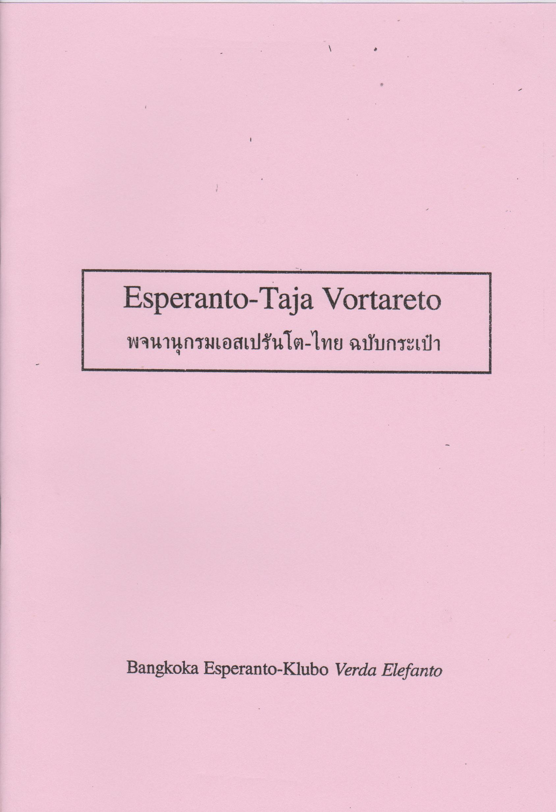
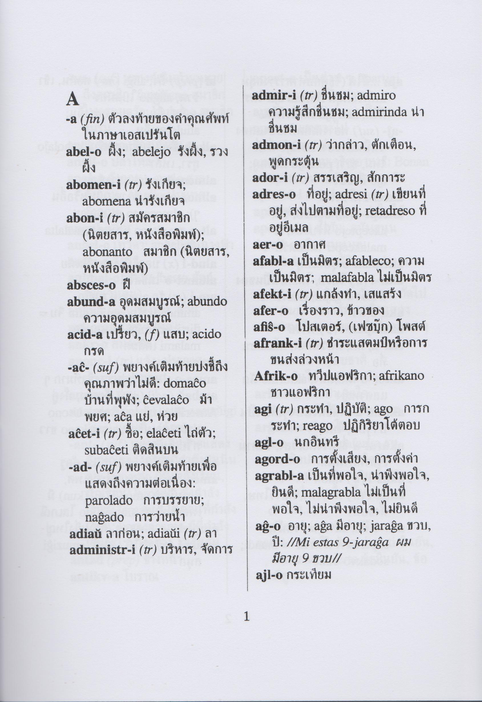

พจนานุกรมเอสเปรันโต-ไทย เรียบเรียงโดยวรุฒ บุญประเสริฐ
ประวัติเริ่มเรียบเรียงพจนานุกรมตั้งแต่ปี 2016 โดยเริ่มจาก รายการหน่วยคำ (morfemoj) ที่ใช้บ่อย ของ Zlatko Tišljar มีจุดประสงค์เพื่อรวบรวมคำศัพท์ที่จำเป็นต่อเรียนภาษาเอสเปรันโตในระยะเริ่มแรกสำหรับผู้ที่ไม่สันทัดการใช้พจนานุกรมเอสเปรันโต-อังกฤษ
 
เวอร์ชันออนไลน์ พจนานุกรมเอสเปรันโต-ไทย ฉบับเบื้องต้น
ดาวน์โหลด
ดาวน์โหลดไฟล์พจนานุกรมเอสเปรันโต-ไทย เรียบเรียงโดยวรุฒ บุญประเสริฐ สำหรับโปรแกรมที่สามารถใช้ไฟล์ของ StarDict ได้ (แอปแอนดรอยด์ ColorDict, GoldenDict, SprintDict, QDict, AIpus)
1. รุ่น 0.01 (06-04-2019) 1,717 คำหลัก (รุ่นทดลอง)
สัญญาอนุญาต

ผลงานนี้ ใช้สัญญาอนุญาตของครีเอทีฟคอมมอนส์แบบ แสดงที่มา 4.0 International.
เป้าหมายต่อ
1. เพิ่มเติมคำศัพท์ให้ได้ 2,500 คำหลัก และเพิ่มคำรอง (kunmetitaj vortoj) ที่จำเป็น ๆ
2. สร้างไฟล์สำหรับโปรแกรม DictionaryForMIDs
เว็บไซต์เพิ่มเติม
1. ดาวน์โหลด StarDict 3.0.6
2. Notes about StarDict dictionary format
3. Thai dictionaries for - Lingvo & StarDict - Тайские словари для Лингво & Стардикт
Esperanto-Taja Vortareto kompilita de Warut Bunprasert
HistorietoLa kompilado komenciĝis de 2016 de La listo de morfemoj esploritaj de Zlatko Tišljar. La vortar-kompilado celas kolekti necesajn vortojn por tajlandaj komencantoj, kiuj ne konvene uzas vortaron Esperanto-Angla.
Jen tuj-serĉebla reta vortaro พจนานุกรมเอสเปรันโต-ไทย ฉบับเบื้องต้น
Elŝutoj
Elŝutu la dosieron Esperanto-Taja Vortareto kompilita de Warut Bunprasert je la formato por StarDict (uzeblas ankaŭ por Andriod-apoj: ColorDict, GoldenDict, SprintDict, QDict, AIpus)
1. versio 0.01 (06-04-2019) 1.717 kapvortoj (provizora versio)
Permesilo
Ĉi tiu verko estas disponebla laŭ la permesilo Krea Komunaĵo Atribuite 4.0 Tutmonda.
Plano
1. Aldonos novajn kapvortojn ĝis 2.500 kaj kutimajn kunmetitajn vortojn.
2. Kreos la dosieron por DictionaryForMIDs.
Pliaj retejoj
1. Elŝutejo por StarDict 3.0.6
2. Notes about StarDict dictionary format
3. Thai dictionaries for - Lingvo & StarDict - Тайские словари для Лингво & Стардикт